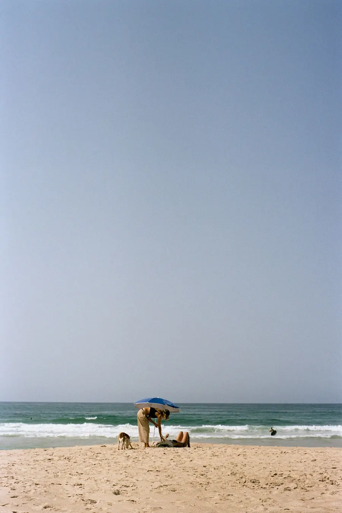

Ask Claude to export your Signal Desktop chats as readable pages and clean, machine-readable data. Everything stays on your computer.
So far
Every line below is a time I started again. Open one to see what happened there.
Started again 7 times
-
Industrial EngineeringKarlsruhe · Herford · Changzhou · Berlin
- BSc Industrial Engineering at KIT.
- Shopfloor at Wemhoener Surface Technologies.
- Lean production in Changzhou.
- Growth strategy and target P&L for a concrete producer with sites in Germany, France and Spain.
- Taught econometrics and prediction in R.
-
Enterprise SoftwareSAP · Syntax
- Built the backend of an AI solution that reads machine nameplates through a phone app.
- Ran a built-v-buy cost-benefit analysis against of the shelf OCR solutions
- Wrote business proposals for MES cloud solutions
-
Systems EngineeringDelft
- MSc Engineering & Policy Analysis at TU Delft.
- Built an agent-based simulation to stress-test the highway network in Bangladesh against natural disasters
- Developed a System Dynamics model to study the interplay between gentrification and housing supply in Amsterdam
- Developed a Simulation approach to draft climate and economic policy against deep uncertainties in the Ijssel river
- Taught data science, machine learning, computer simulation in python
-
EconomicsRotterdam
- MSc Economics & Business at Erasmus University Rotterdam.
- Game theory
- Causal identification
- Climate adaptation and development economics
-
Private EquityRothschild & Co
- Due diligence on private market funds.
- Strategic asset allocation research across public, private and real assets.
-
Flood InsuranceETH Zürich
- Visiting researcher in the Weather and Climate Risks Group, on an IDEA League research grant.
- Built an agent based model to simulate client behavior against price shifts and climate shocks within the US National Flood Insurance Program.
-
AI PolicyOpendata.ch · Zürich
- Operational lead of the fifth funding round of the Prototype Fund.
- Connected software teams with grant funding and AI-compliance researchers, to launch under EU and Swiss AI law.
- 110 teams vetted, 5 selected, CHF 1M in funding managed.
-
What's next
Stay tuned.
Now
- Starting this journey right here...
- More flood insurance modeling
- Should we launch a startup?
updated October 2026

Things I build
All on GitHubAsk Claude to export your WhatsApp chats, straight from the Mac app or from a phone export, as readable pages and clean, machine-readable data. Everything stays on your computer.
Next one brewing...
Meanwhile, on film
Between one start and the next, I take pictures.


- Started again 7 times
- Version Philip v8
- Write to hello@philipagain.com
Why Philip again?
 It was the pandemic, just after v1. I was bored with nothing to do and no goal in sight, when from the depths of an uninspiring algorithm this guy came along. No script, no audience, no grand plan. Just a piano, a rooftop, a sunset, and an idea. I put that set on repeat and I built v2 (and v3). Thank you Fred.
It was the pandemic, just after v1. I was bored with nothing to do and no goal in sight, when from the depths of an uninspiring algorithm this guy came along. No script, no audience, no grand plan. Just a piano, a rooftop, a sunset, and an idea. I put that set on repeat and I built v2 (and v3). Thank you Fred.
Get in touch
hello@philipagain.com github.com/philipagainHiring, building something new, or want to swap notes on starting again? I read every email.